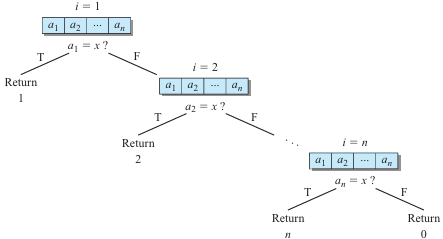
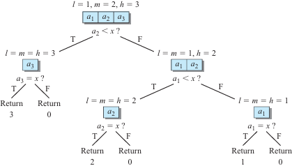

10.5 Алгоритмын шинжилгээ (2-р хэсэг)
10.1-р хэсэгт бид мод болон тэдгээрийн хэрэглээг судалсан[cite: 365]. 10.2 болон 10.3-р хэсгүүдэд холбоост графуудаас бүрхэгч мод олдог төрөл бүрийн алгоритмуудыг авч үзсэн[cite: 365]. 10.5-р хэсэгт алгоритмын шинжилгээ рүү анхаарлаа шилжүүлснээр бид нэг бүтэн тойрог хийж, одоо алгоритмуудыг судлахад модыг ашиглах болно[cite: 365].
Шийдвэрийн мод (Decision Trees)
Алгоритмд дүн шинжилгээ хийхэд ашигладаг нэг хэрэгсэл бол шийдвэрийн мод (decision tree) юм[cite: 365]. Ийм мод нь алгоритм ажиллах явцад хийгдсэн төрөл бүрийн шийдвэр гаргах шалгалтууд дээр үндэслэн алгоритмын дагаж болох замуудыг тусгадаг[cite: 365]. Энд бид шийдвэр гаргах шалгалтууд нь харьцуулалт байдаг хоёртын шийдвэрийн моднууд дээр анхаарлаа төвлөрүүлнэ[cite: 365]. Модны оройнууд нь алгоритм ажиллаж байх үеийн төлөвүүдийг бүртгэнэ[cite: 365]. Харьцуулалт хийгдэж буй оройнууд нь харьцуулалтын үр дүнгээр (үнэн эсвэл худал) ялгагдах хүүхдүүдтэй холбогдоно[cite: 365].
Дараалсан хайлтын шийдвэрийн модны дүрслэлийг Зураг 10.29-д харуулав[cite: 365, 366]. \(1 \le i \le n\) бүрийн хувьд \(A[i] = x\) эсэхийг шалгаж буй дотоод орой оршино[cite: 365]. Навчнууд нь \(x\)-ийн байрлалын боломжит буцаах утгуудыг илэрхийлнэ[cite: 365]. Энэ модны өндөр нь \(n\) байна[cite: 365].

[cite: 366]Хоёртын хайлтын шийдвэрийн модыг (\(3\) урттай массивууд дээр хязгаарласан) Зураг 10.30-д дүрсэлсэн[cite: 366]. Тэнд оройнууд нь мөн адил хийгдсэн харьцуулалтууд болон алгоритмаар буцаагдах байрлалуудыг тусгасан байна[cite: 366]. Энэ тохиолдолд оройнууд нь тухайн үе шатанд авч үзэж буй массивын зөвхөн тэр хэсгийг харуулна[cite: 366]. Энэ модны өндөр нь \(3 = 1 + \lceil \log_2 3 \rceil\) байна[cite: 366].

[cite: 366]Зураг 10.29 ба 10.30-д модны өндөр нь алгоритмын хамгийн муу тохиолдлын нарийн төвөгтэй байдалтай тэнцүү байгааг анхаарна уу[cite: 366]. Алгоритмын хамгийн муу тохиолдол нь үндэснээс эхэлсэн хамгийн урт замтай харгалздаг тул энэ нь ерөнхий тохиолдолд үнэн байна[cite: 366].
Шийдвэрийн модны дотоод оройнууд нь шийдвэр гаргаж буй алгоритмын завсрын төлөвүүдийг илэрхийлдэг бол навчнууд нь эцсийн боломжит үр дүнгүүдийг төлөөлдөг[cite: 366]. \(n\) урттай массиваас \(x\) утгыг хайхад \(n + 1\) боломжит үр дүн гарна[cite: 366]. Хэрэв \(x\) олдвол \(1\)-ээс \(n\) хүртэлх ямар нэгэн индексийг буцаана[cite: 366]. Хэрэв \(x\) олдохгүй бол \(0\)-ийг буцаана[cite: 366]. Иймд дурын хайлтын алгоритмын шийдвэрийн мод хамгийн багадаа \(n + 1\) навчтай байх ёстой[cite: 366]. Теорем 10.7 ёсоор энэ модны өндөр хамгийн багадаа \(\lceil \log_2(n + 1) \rceil\) байх ёстой[cite: 366]. Өөрөөр хэлбэл, хайлтын алгоритмын боломжит хамгийн бага нарийн төвөгтэй байдал нь \(\Theta(\lceil \log_2(n + 1) \rceil) = \Theta(\log_2 n)\) байна[cite: 366]. Тиймээс Хоёртын хайлт нь боломжит хамгийн бага нарийн төвөгтэй байдалтай[cite: 366]. Энэ утгаараа үүнээс илүү үр ашигтай өөр ямар ч хайлтын алгоритм байхгүй[cite: 366].
Эрэмбэлэх алгоритмууд (Sorting Algorithms)
Бид алгоритмын шинжилгээний судалгаагаа өөр нэгэн ангиллын алгоритмууд руу шилжүүлэн үргэлжлүүлье[cite: 367]. Энд бид өгөгдсөн массивын элементүүдийг үл буурах эрэмбээр байрлуулахыг сонирхож байна[cite: 367]. Хэрэв бид массиваас элемент хайх шаардлага байнга гардаг бол энэ нь бидэнд гарцаагүй сонирхолтой байх болно[cite: 367]. Жишээлбэл, бид дараа нь файлуудаа илүү хялбар олохын тулд тэдгээрийг ихэвчлэн цагаан толгойн дарааллаар эрэмбэлдэг[cite: 367]. Үүнтэй адилаар өгөгдлийн сан дахь бүртгэлүүдийг ямар нэгэн таних дугаарын дагуу эрэмбэлж болно[cite: 367]. Энэ нь бүртгэлүүд рүү илүү хурдан хандах тохиромжтой арга замыг олгоно[cite: 367]. Хэдийгээр эрэмбэлэгдэх түлхүүрүүд нь тоо бус текст байж болох ч аливаа төрлийн түлхүүрт тоон утга оноож болох тул тоонуудыг эрэмбэлдэг алгоритмуудыг авч үзэхэд л хангалттай[cite: 367].
Бидний эхний эрэмбэлэх алгоритм нь массиваар дараалан гүйх замаар үүнийг хийдэг[cite: 367]. Элемент бүрийг өмнө нь аль хэдийн эрэмбэлэгдсэн хэсэгтэй харьцуулан өөрийнх нь зөв байрлалд оруулж тавина[cite: 367]. Үүнийг Оруулан эрэмбэлэх (Insertion Sort) гэж нэрлэдэг бөгөөд Алгоритм 10.8-д харуулав[cite: 367].
Хайлтын алгоритмуудын нэгэн адил эрэмбэлэх алгоритмуудад сонирхох үйлдлүүд нь массивын элементүүдийг оролцуулсан харьцуулалтууд юм. Мөн оролтын хэмжээг массивын уртаар авч үзнэ. Эрэмбэлэх алгоритмын хамгийн муу тохиолдлын нарийн төвөгтэй байдлыг тодорхойлоход яг эдгээр хүчин зүйлсийг ашигладаг.
Оруулан эрэмбэлэх алгоритмын (\(n = 3\) урттай массивууд дээрх) шийдвэрийн модны дүрслэлийг Зураг 10.31-д харуулав. Тэр модны өндөр нь \(3 = \frac{3(2)}{2}\) байна.
{#fig-fig-10-31 width=65%}
Бидний хоёр дахь эрэмбэлэх алгоритм нь өгөгдсөн массивыг голоор нь хоёр хуваах замаар ажилладаг. Энэ нь хагас тус бүрийг эрэмбэлж, дараа нь эрэмбэлэгдсэн хоёр хагасыг буцаан нэг эрэмбэлэгдсэн массив болгон нэгтгэдэг. Энэхүү рекурсив алгоритмыг Нэгтгэн эрэмбэлэх (Merge Sort) гэж нэрлэдэг бөгөөд Алгоритм 10.9-д харуулав.
Энэ алгоритм нь үндсэндээ Алгоритм 10.10-д үзүүлсэн Merge хэмээх алгоритм дээр суурилдаг. Тэр алгоритм нь эрэмбэлэгдсэн хоёр массивыг нэг эрэмбэлэгдсэн массив болгон нэгтгэдэг.
Баталгаа. \(n\) урттай массивын \(n!\) боломжит сэлгэмэл байдаг тул дурын эрэмбэлэх алгоритмын шийдвэрийн мод хамгийн багадаа \(n!\) навчтай байх ёстой. Тэгвэл Теорем 10.7 ёсоор энэ модны өндөр хамгийн багадаа \(\lceil \log_2 n! \rceil\) байх ёстойг бидэнд хэлнэ. Улмаар хамгийн муу тохиолдлын нарийн төвөгтэй байдал нь хамгийн багадаа:
\[\begin{aligned} \lceil \log_2 n! \rceil &\ge \log_2 n! = \sum_{i=1}^n \log_2 i \\ &\ge \sum_{i=\lceil \frac{n}{2} \rceil}^n \log_2 i = \log_2 \left\lceil \frac{n}{2} \right\rceil + \dots + \log_2 n \\ &\ge \left(n - \left\lceil \frac{n}{2} \right\rceil + 1\right) \log_2 \left\lceil \frac{n}{2} \right\rceil = \left(\left\lfloor \frac{n}{2} \right\rfloor + 1\right) \log_2 \left\lceil \frac{n}{2} \right\rceil \\ &\ge \left\lceil \frac{n}{2} \right\rceil \log_2 \left\lceil \frac{n}{2} \right\rceil \\ &\ge \frac{n}{2} \log_2 \frac{n}{2} \end{aligned}\]
байна. \(\square\)
10.4-р хэсгийн Дасгал 33 нь \(O\left(\frac{n}{2} \log_2 \frac{n}{2}\right) = O(n \log_2 n)\) гэдгийг өгдөг тул Нэгтгэн эрэмбэлэх алгоритм нь \(\Theta(n \log_2 n)\) болох нь мөрдөн гарна. Түүнчлэн их-\(\Theta\)-ийн утгаар ямар ч эрэмбэлэх алгоритм Нэгтгэн эрэмбэлэх алгоритмаас илүү үр ашигтай байж чадахгүй. Гэсэн хэдий ч бид орон зайн нарийн төвөгтэй байдлыг бус зөвхөн хугацааны нарийн төвөгтэй байдлыг авч үзсэн гэдгийг санаарай. Нэгтгэн эрэмбэлэх алгоритмын рекурсив шинж чанар нь процедур өөрийгөө дуудах бүрд илүү их санах ой ашиглахыг шаарддаг. Нөгөөтэйгүүр Оруулан эрэмбэлэх алгоритм нь байран дээр нь эрэмбэлэх (in-place sort) алгоритм юм. Өөрөөр хэлбэл, эрэмбэлэх гэж буй \(A\) массивын элементүүдийг \(A\) дотор нь өөр дээр нь хольж солихоос бус, рекурсив Нэгтгэн эрэмбэлэх алгоритмд шаардагддаг шиг \(A\)-ийн дэд массивуудын хуулбарыг үүсгэх шаардлагагүй байдаг.
Дасгалуудад бид гурван нэмэлт эрэмбэлэх алгоритмыг танилцуулна: Хөөсөн эрэмбэлэлт (Bubble Sort), Сонгон эрэмбэлэлт (Selection Sort), болон Хурдан эрэмбэлэлт (Quick Sort). Эдгээрийг оролцуулан энэ хэсэгт авч үзсэн эрэмбэлэх алгоритмуудын хугацааны нарийн төвөгтэй байдлыг Хүснэгт 10.3-т жагсаасан бөгөөд тэр хүснэгт дэх дутуу утгуудыг дасгалуудад үлдээсэн болно. Эрэмбэлэх шаардлагатай санамсаргүй массив дээр хүлээгдэж буй ажиллах хугацааны талаар ойлголт өгөхийн тулд Хүснэгт 10.3-т батлагдаагүй дундаж тохиолдлын нарийн төвөгтэй байдлуудыг оруулсан болно. Мөн Хурдан эрэмбэлэлтийн дундаж тохиолдлын нарийн төвөгтэй байдал нь түүний нэрийг зөвтгөхөд тусалдаг.
| Эрэмбэлэх алгоритм | Оруулан эрэмбэлэх | Хөөсөн | Сонгон | Нэгтгэн эрэмбэлэх | Хурдан |
|---|---|---|---|---|---|
| Хамгийн муу тохиолдол | \(\Theta(n^2)\) | \(\Theta(n \log_2 n)\) | |||
| Дундаж тохиолдол | \(\Theta(n^2)\) | \(\Theta(n^2)\) | \(\Theta(n^2)\) | \(\Theta(n \log_2 n)\) | \(\Theta(n \log_2 n)\) |
10.5-р зүйлийн дасгалууд
\(4\) урттай массивуудын хувьд Хоёртын хайлтын шийдвэрийн модыг байгуул.
\(5\) урттай массивуудын хувьд Хоёртын хайлтын шийдвэрийн модыг байгуул.
\(n = 4\) үед Maximum алгоритмын (10.4-р хэсгийн Дасгал 11) шийдвэрийн модыг байгуул.
\(n = 3\) үед Count алгоритмын (10.4-р хэсгийн Дасгал 12) шийдвэрийн модыг байгуул.
10-5.qmd файлын төгсгөл (Алгоритм 10.11–10.14 болон 5–46-р дасгалууд) болон 10-р бүлгийн тойм бодлогууд (1–57-р бодлогууд)-ыг таны Quarto номын стандартад яг тааруулан орчуулж бэлтгэлээ. Ингэснээр сурах бичгийн 10-р бүлэг болон үндсэн агуулга бүрэн дууслаа.
1. 10-5.qmd-ийн төгсгөл (Өмнөх 4-р дасгалын доороос шууд залгана)
*5-аас 8 хүртэлх дасгалуудад өгөгдсөн $A$ массивын хувьд Оруулан эрэмбэлэх алгоритмын гол төлөвүүдийг харуул.*
5. $A = [7, 5, 3, 1]$. $\qquad$ 6. $A = [3, 8, 4, 1, 2, 6, 5, 7]$.
7. $A = [4, 2, 6, 1, 5, 3]$. $\qquad$ 8. $A = [3, 8, 6, 1, 4]$.
9. $2$ урттай массивуудын хувьд Оруулан эрэмбэлэх алгоритмын шийдвэрийн модыг байгуул.
10. $4$ урттай массивуудын хувьд $A[4]$ нь хамгийн бага утга байх тохиолдолд Оруулан эрэмбэлэх алгоритмын шийдвэрийн модны хэсгийг байгуул.
*11-ээс 14 хүртэлх дасгалуудад өгөгдсөн $A$ массивын хувьд Нэгтгэн эрэмбэлэх алгоритм нь эхлээд массивыг хэрхэн хэсгүүдэд хувааж, дараа нь хэсгүүдийг хэрхэн эрэмбээр нь буцаан нэгтгэж байгааг харуулсан модны бүдүүвч байгуул.*
11. $A = [7, 5, 3, 1]$. $\qquad$ 12. $A = [3, 8, 4, 1, 2, 6, 5, 7]$.
13. $A = [4, 2, 6, 1, 5, 3]$. $\qquad$ 14. $A = [3, 8, 6, 1, 4]$.
**Хөөсөн эрэмбэлэлт** (Bubble Sort) эрэмбэлэх алгоритмыг Алгоритм 10.11-д харуулав. *15-аас 18 хүртэлх дасгалуудад өгөгдсөн $A$ массивын хувьд Хөөсөн эрэмбэлэлтийн гол төлөвүүдийг харуул.*
::: {.callout-note icon=false}
## Алгоритм 10.11: Хөөсөн эрэмбэлэлт (Bubble Sort)
$i$ хувьсагч нь $A[i + 1, \dots, n]$ хэсэг аль хэдийн байрлалаа эзэлсэн гэсэн таамаглал дээр үндэслэн тодорхойлох элементийн индекс бөгөөд $j$ нь $i$-р байрлалд тохирох утгыг шүүж дээшлүүлэхийн тулд бага индексүүдээр гүйнэ.
**Алгоритм.**
```text
For i = n down to 2:
For j = 1 to i - 1:
Хэрэв A[j] > A[j + 1] бол:
temp = A[j + 1] гэж авъя.
A[j + 1] = A[j] болгоно.
A[j] = temp болгоно.
A-г буцаана.:::
- \(A = [4, 2, 6, 1, 5, 3]\). \(\qquad\) 16. \(A = [5, 8, 1, 3, 6]\).
- \(A = [7, 5, 4, 2, 1]\). \(\qquad\) 18. \(A = [8, 6, 5, 3, 2, 1]\).
Сонгон эрэмбэлэлт (Selection Sort) эрэмбэлэх алгоритмыг Алгоритм 10.12-т харуулав. 19-өөс 22 хүртэлх дасгалуудад өгөгдсөн \(A\) массивын хувьд Сонгон эрэмбэлэлтийн гол төлөвүүдийг харуул.
- \(A = [3, 8, 6, 1, 4]\).
- \(A = [2, 8, 3, 1, 5, 4]\). \(\qquad\) 21. \(A = [6, 5, 4, 3, 2, 1]\).
- \(A = [7, 5, 4, 2, 1]\).
- Хөөсөн эрэмбэлэлтийн хамгийн муу тохиолдлын нарийн төвөгтэй байдлыг тодорхойл.
- Сонгон эрэмбэлэлтийн хамгийн муу тохиолдлын нарийн төвөгтэй байдлыг тодорхойл.
- \(n = 3\) үед Хөөсөн эрэмбэлэлтийн шийдвэрийн модыг байгуул.
- \(n = 2\) үед Хөөсөн эрэмбэлэлтийн шийдвэрийн модыг байгуул.
- \(n = 2\) үед Сонгон эрэмбэлэлтийн шийдвэрийн модыг байгуул.
- \(n = 3\) үед Сонгон эрэмбэлэлтийн шийдвэрийн модыг байгуул.
- Хөөсөн эрэмбэлэлт нь их-\(\Theta\)-ийн утгаар хамгийн үр ашигтай эрэмбэлэх алгоритм мөн үү?
- Сонгон эрэмбэлэлт нь их-\(\Theta\)-ийн утгаар хамгийн үр ашигтай эрэмбэлэх алгоритм мөн үү?
- Бридж хөзөр тоглох үед тоглогч гартаа байгаа хөзрүүдээ эрэмбэлдэг аргатай ижил ажилладаг тул заримдаа Бридж эрэмбэлэлт (Bridge Sort) гэж нэрлэдэг эрэмбэлэх алгоритм бий. Эхлээд тэрээр хамгийн том хөзрөө гарынхаа хамгийн баруун захын байрлалд шилжүүлнэ. Дараа нь хоёр дахь том хөзрөө баруун захаас хоёр дахь байрлалд шилжүүлэх гэх мэтээр үргэлжилнэ. Энэ арга нь энэ хэсэгт авч үзсэн эрэмбэлэх алгоритмуудын нэгтэй давхцдаг. Аль нь вэ?
- Нэгэн ажилтан Смит (Smith) хэмээх өвчтөний эмнэлгийн картыг олох шаардлагатай болжээ. Тэрээр “S” үсэгтэй шургуулга дээр очоод татаж нээнэ. Эхлээд тэр шургуулганы голын орчмоос нэг хавтас сугалан үзэхэд Ширс (Shears) гэдэг өвчтөний карт байв. Тиймээс тэр шургуулганы дөрөвний гурвын орчим руу ухарч үзэхэд Стивенс (Stevens) гэдэг өвчтөний карт таарчээ. Дараа нь тэр урагшлан хайх гэх мэтээр үргэлжлүүлнэ. Энэ арга барил нь 10.4-р хэсэгт авч үзсэн хайлтын алгоритмуудын нэгтэй төстэй. Аль нь вэ?
33-аас 36 хүртэлх дасгалуудад хэрэв \(A\) массивт давхардсан элементүүд байвал заасан эрэмбэлэх алгоритм нь тэдгээрийг анхны эрэмбээр нь үргэлж үлдээх эсэхийг тодорхойл. Хэрэв үгүй бол тайлбарла.
- Оруулан эрэмбэлэх. \(\qquad\) 34. Нэгтгэн эрэмбэлэх.
- Хөөсөн эрэмбэлэлт. \(\qquad\) 36. Сонгон эрэмбэлэлт.
- \(\star\) \(n\) урттай массивыг Нэгтгэн эрэмбэлэхэд шаардагдах харьцуулалтын хамгийн олон тоог \(c_n\) гэе. \(\forall n \ge 1, \, c_n \le 2n \log_2 n\) болохыг харуулснаар Жишээ 10.25-ын баталгааг гүйцээ. Зөвлөмж: \(\forall n \ge 1, \, 2^{c_n} \le 2^{2n \log_2 n} = n^{2n}\) болохыг гүйцэд индукцээр батал.
- \(\star\) Аливаа бэхлэгдсэн \(k\)-ийн хувьд \(n\) урттай массиваас хамгийн эхний \(k\) элементийг олох нь \(O(n)\) байдаг атлаа эрэмбэлэх нь \(O(n \log_2 n)\) байдгийг ажигла. Энэ яагаад боломжтой болохыг тайлбарла.
- Maximum алгоритм (10.4-р хэсгийн Дасгал 11) нь \(\Theta(n)\) болохыг харуул.
- Count алгоритм (10.4-р хэсгийн Дасгал 12) нь \(\Theta(n)\) болохыг харуул.
Хурдан эрэмбэлэлт (Quick Sort) эрэмбэлэх алгоритмыг Алгоритм 10.13-т харуулав. Энэ нь үндсэндээ Алгоритм 10.14-т үзүүлсэн Split (Хуваах) алгоритм дээр суурилдаг.
41-ээс 44 хүртэлх дасгалуудад өгөгдсөн \(A\) массивын хувьд Хурдан эрэмбэлэлтийн гол төлөвүүдийг харуул. Тухайлбал, Split дуудагдах бүрд буцаагдсан mid утгыг бич. Мөн Quick_Sort-ийн дуудлагуудыг \(1\) урттай дэд массивууд хүртэл нь дагаж хий.
- \(A = [3, 5, 6, 1, 4]\). \(\qquad\) 42. \(A = [2, 1, 4, 3, 6, 5]\).
- \(A = [1, 2, 3, 4]\). \(\qquad\) 44. \(A = [2, 7, 1, 3, 5]\).
- Хурдан эрэмбэлэлтийн хамгийн муу тохиолдлын нарийн төвөгтэй байдлыг тодорхойл. Энэ нь өгөгдсөн \(A\) массив анхнаасаа үл буурах эрэмбээр эхлэх үед гардаг болохыг тэмдэглэе. Өөрөөр хэлбэл,
Split-ийн дуудлага бүрmid = 1утга буцаана. Дасгал 43 бол энэ хамгийн муу тохиолдлын жишээ юм. Анхааруулга: Хамгийн муу тохиолдлын нарийн төвөгтэй байдал нь үргэлж дундаж тохиолдлын нарийн төвөгтэй байдалтай ижил эрэмбэтэй байдаггүй. - \(\star\) Хэрэв
Split-ийн дуудлага бүрmid = 2утга буцаадаг бол Хурдан эрэмбэлэлтэд хийгдэх харьцуулалтын тоог тодорхойл. Дасгал 42 бол энэ тохиолдлын жишээ болохыг тэмдэглэе.